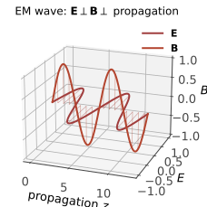

本页目录
电磁 II · Maxwell 方程与电磁波
对标：Griffiths §7、§9 ｜ 前置：em-01、pde-02（波动方程） 物理学史上最著名的"补丁"：Maxwell 给 Ampère 定律加了一项位移电流，方程组闭合的瞬间——光从方程里跑了出来。本页推导这一切，并把电磁波的性质（横波、偏振、能流）配齐。
学习层：一束平面波能否同时通过所有约束？
1. 先过预测门：看见一条“波”还不够
本实验只讨论均匀、无源、线性真空中的单色平面波。采用复振幅约定 \(\mathbf E(\mathbf r,t)=\operatorname{Re}[\mathbf E_0e^{i(\mathbf k\cdot\mathbf r-\omega t)}]\)，并在归一化单位中取 \(c=\omega=|\mathbf k|=1\)。先不打开实验台，预测下面三件事：
- 对非零的无源平面波，\(\mathbf E\) 和 \(\mathbf B\) 是否都必须垂直于 \(\mathbf k\)？
- 若 \(\mathbf E\) 的方向已知，\(\mathbf B\) 应该沿 \(\mathbf k\times\mathbf E\)、\(\mathbf E\times\mathbf k\)，还是与 \(\mathbf E\) 平行？
- 在真空无源区关闭位移电流后，Ampère 方程还能否与 Faraday 方程拼成一个有限频率的自持传播波？
2. 实验台：从偏振到约束账本
选择线偏振、圆偏振、非法纵向 \(\mathbf E\)、错误 \(\mathbf B\) 方向或关闭位移电流的预设；揭晓后拖动固定观察点的相位。图中分别投影 \(\mathbf E\)、\(\mathbf B\)、\(\mathbf k\) 到 \(xy\)、\(xz\)、\(yz\) 三个平面，账本逐项计算
最后一式是无源 Ampère–Maxwell 方程的平面波形式；如果去掉位移电流，右侧会变成 \(0\)，而非 \(-\omega\mathbf E/c^2\)。
无 JavaScript 时的静态读法：以下表格使用 \(c=\omega=|\mathbf k|=1\)、\(\mathbf k=\hat{\mathbf z}\)，复振幅时间因子为 \(e^{-i\omega t}\)。圆偏振写成 \(\mathbf E_0=\hat{\mathbf x}+i\hat{\mathbf y}\)、\(\mathbf B_0=\hat{\mathbf y}-i\hat{\mathbf x}\)；其余预设用实振幅。表中的“残差”是约束左、右两边之差的模；\(\langle\mathbf S\rangle\) 是时间平均 Poynting 方向。
预测门的答案：非零无源平面波中 \(\mathbf E\perp\mathbf k\)、\(\mathbf B\perp\mathbf k\)；Faraday 给出 \(\mathbf B=(1/\omega)\mathbf k\times\mathbf E\)；关闭位移电流后，\(\mathbf k\times\mathbf B=0\) 与非零波要求 \(\mathbf k\times\mathbf B=-(\omega/c^2)\mathbf E\) 冲突。
| 预设 | \(\mathbf E_0\) | \(\mathbf B_0\) | \(\mathbf k\cdot\mathbf E\) | \(\mathbf k\cdot\mathbf B\) | \(\mathbf B-(\mathbf k\times\mathbf E)/\omega\) | \(|E|/(c|B|)\) | \(\langle\mathbf S\rangle\) | Ampère–Maxwell | |---|---|---|---:|---:|---:|---:|---|---| | 线偏振 | \(\hat x\) | \(\hat y\) | \(0\) | \(0\) | \(0\) | \(1\) | \(+\hat z\) | 通过 | | 圆偏振 | \(\hat x+i\hat y\) | \(\hat y-i\hat x\) | \(0\) | \(0\) | \(0\) | \(1\) | \(+\hat z\) | 通过 | | 非法纵向 \(E\) | \(\hat z\) | \(0\) | \(1\) | \(0\) | \(0\) | \(\infty\) | \(0\) | 失败，残差 \(1\) | | 错误 \(B\) 方向 | \(\hat x\) | \(-\hat y\) | \(0\) | \(0\) | \(2\) | \(1\) | \(-\hat z\) | 失败，残差 \(2\) | | 关闭位移电流 | \(\hat x\) | \(\hat y\) | \(0\) | \(0\) | \(0\) | \(1\) | \(+\hat z\) | 含位移项通过；关闭后失败，残差 \(1\) |
投影视图的静态读法是：线偏振只有 \(E_x,B_y,k_z\)；圆偏振的实场在 \(xy\) 平面旋转，但 \(\mathbf B\) 始终由 \(\mathbf k\times\mathbf E/\omega\) 给出；非法纵向预设只违反 \(\mathbf k\cdot\mathbf E=0\) 就已不能是这类无源波；错误 \(B\) 的能流反向；关闭位移电流则破坏 Ampère–Maxwell 账本。
3. 适用域与反例
这里的横向性、\(|E|=c|B|\) 和 \(\langle\mathbf S\rangle\parallel\mathbf k\) 是单色平面波在均匀无源线性真空中的结论，不是任意电磁场的逐点定律。多个频率的叠加、局域波包、天线附近的近场、反射/透射边界和有限束都需要保留相应的空间结构与边界条件；介质中还要改用介质的本构关系，不能直接套用 \(\varepsilon_0,\mu_0\) 的真空比例。
1. Faraday 感应与位移电流
Faraday 定律：变化的磁通感生电场——\(\oint\mathbf E\cdot d\boldsymbol\ell = -\frac{d\Phi_B}{dt}\) ⟺
（负号 = Lenz 定律：感应总在抵抗变化——能量守恒的守门员；发电机、变压器的全部原理。）
Maxwell 的补丁【推导】：若把 Ampère 方程暂写成静磁形式 \(\nabla\times\mathbf B = \mu_0\mathbf J\)，取散度会得到 \(\nabla\cdot\mathbf J=0\)；但一般源的连续性方程是 \(\nabla\cdot\mathbf J=-\partial_t\rho\)，两者只在特殊的定常情形相容。补上位移电流 \(\varepsilon_0\partial_t\mathbf E\) 后，Gauss 定律的时间导数正好补偿连续性方程，方程组对任意局域源保持一致。\(\blacksquare\)——由数学自洽性倒逼出的新物理：理论物理方法论的经典示范。
真空中的 Maxwell 方程组（允许有源）：真空指本构常数为 \(\varepsilon_0,\mu_0\)，并不等于没有电荷和电流：
2. 光的诞生（教科书物理最高光的两行）

在无源真空区域（\(\rho=0,\mathbf J=0\)），再假设场足够光滑且区域均匀，才可以对 Faraday 取旋度并代入 Ampère–Maxwell。用 \(\nabla\times(\nabla\times\mathbf E)=\nabla(\nabla\cdot\mathbf E)-\nabla^2\mathbf E\) 与 \(\nabla\cdot\mathbf E=0\)：
——波动方程（pde-02 的双曲型主角），波速
两个静态常数（电的 \(\varepsilon_0\)、磁的 \(\mu_0\)）拼出光速——Maxwell 由此判定"光是电磁波"：理论统一的黄金标准案例（电、磁、光学三门学科在两行推导里合并）。
平面波解的性质【推导】：在这个均匀无源真空区域取单色 ansatz \(\mathbf E=\mathbf E_0e^{i(\mathbf k\cdot\mathbf r-\omega t)}\)，并对 \(\mathbf B\) 使用同一频率与波矢。代回方程组先得 \(\mathbf k\cdot\mathbf E_0=0\)、\(\mathbf k\cdot\mathbf B_0=0\)，Faraday 给 \(\mathbf B_0=(\mathbf k\times\mathbf E_0)/\omega\)；Ampère–Maxwell 再给 \(|\mathbf k|=\omega/c\)。因此对这一条波有 \(\mathbf E\perp\mathbf B\perp\mathbf k\)、\(|E|=c|B|\)。偏振是 \(\mathbf E_0\) 在横平面内的复振幅自由度（线偏/圆偏由两个分量的相位关系区分）；这句话不把单色平面波结论推广到任意场。
关闭位移电流在这里为何失败也可以直接看出：无源时没有 \(\mathbf J\)，若删去 \(\mu_0\varepsilon_0\partial_t\mathbf E\)，Ampère 方程的平面波形式会要求 \(\mathbf k\times\mathbf B=0\)；而保留 Faraday 与非零横向 \(\mathbf E\) 时，必有 \(\mathbf k\times\mathbf B=-(\omega/c^2)\mathbf E\)。除非退化到 \(\omega=0\) 或零场，否则不能组成有限频率的真空传播波。这不是说位移电流在所有低频问题中都不能近似：在特定导体的准静态尺度上，若位移项相对传导电流确实很小，忽略它可以是受控的近似；本页实验不在那个 regime。
3. 势的语言与规范（承前启后）
\(\mathbf B = \nabla\times\mathbf A\)、\(\mathbf E = -\nabla V - \frac{\partial\mathbf A}{\partial t}\)：自动满足两条无源方程；剩下两条在 Lorenz 规范（\(\nabla\cdot\mathbf A + \frac{1}{c^2}\frac{\partial V}{\partial t} = 0\)）下解耦成对称的波动方程
——这是带源的真空波动方程：解即推迟势（ced-02 的主角）。它和上面的无源平面波是两种不同的取法，不能把推迟势的近源结构当成平面波；在边界、介质界面和天线近场处也必须保留几何与本构条件。规范自由（\(\mathbf A \to \mathbf A + \nabla\chi\)，\(V \to V - \frac{\partial\chi}{\partial t}\) 不改场）此处是计算便利，到 pp-01 将升格为"决定相互作用形式的第一原理"。
4. 练习与要点
例 1（数量级体感） 对一束近似局部平面、单色线偏振的正弦波，阳光强度 \(\sim 1.4\ \mathrm{kW/m^2}\)：由 \(I = \frac{c\varepsilon_0E_0^2}{2}\) 反解 \(E_0 \approx 1\ \mathrm{kV/m}\)、\(B_0 \approx 3\ \mu\mathrm T\)——阳光的电场千伏每米级、磁场却比地磁还弱。这个等式是该理想波的振幅关系，不是任意辐射场的逐点规则。
例 2（波段一览） 同一方程组、不同 \(\omega\)：无线电—微波—红外—可见（400–700 nm）—紫外—X—γ——"光谱只是频率轴上的地名"；波长与结构尺度匹配决定应用（天线 ~ 波长、显微极限 ~ 波长——opt-01 衍射极限伏笔）。
例 3（Lenz 判向练习） 磁铁 N 极插向线圈：磁通增 ⇒ 感应电流产生反向磁场（面对磁铁一侧成 N 极）排斥之——"感应永远唱反调"；涡流刹车、无线充电的方向判断同法。\(\blacksquare\)
下一页：场的力学身份——能量（Poynting）、动量（辐射压）与辐射入门：加速电荷为何发光。